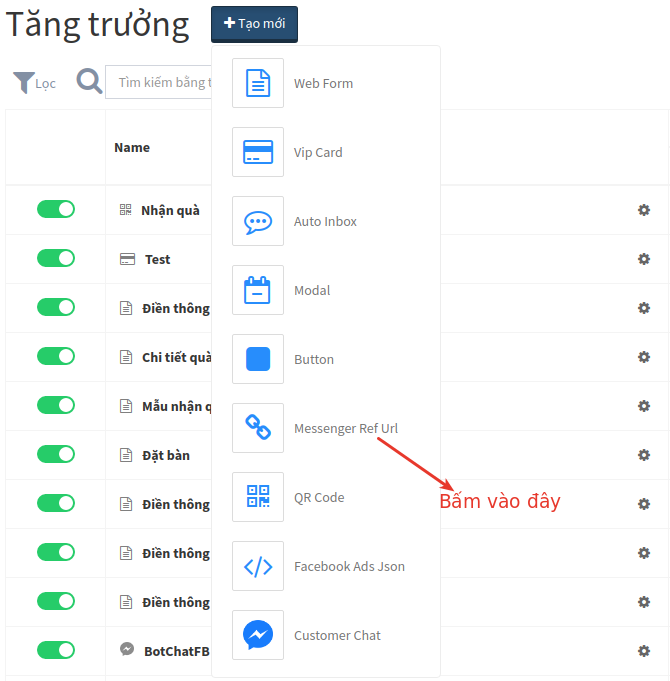
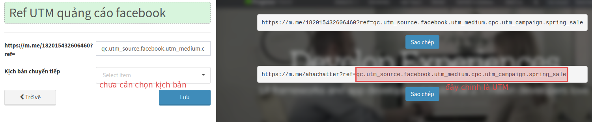
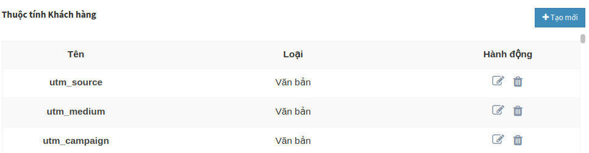
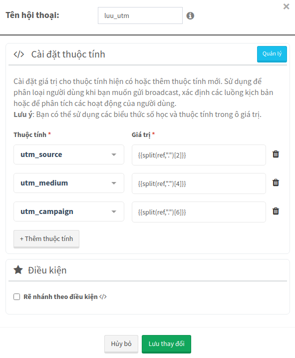
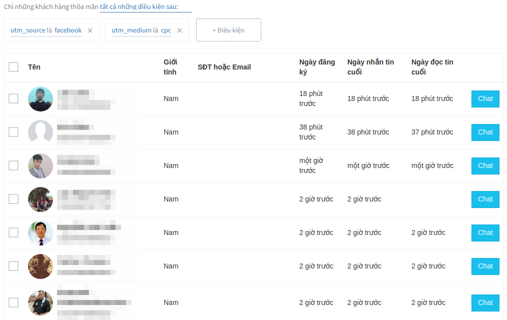

Đo lường hiệu quả quảng cáo bằng UTM trong Chatbot
Nếu bạn muốn đo lường hiệu quả quảng cáo của mình bằng những con số thực chứ không chỉ là phỏng đoán, thì việc sử dụng UTM là điều đáng xem xét.
1. UTM là gì
UTM hay còn được gọi là mã UTM là một phần văn bản được thêm vào cuối URL cho phép bạn theo dõi các lượt truy cập vào URL đó. Đây có thể là những lượt truy cập từ các bài đăng trên Mạng xã hội, Email, CPC, Chatbot - về cơ bản là bất cứ lúc nào bạn muốn biết lưu lượng truy cập đến từ đâu. Điều này hữu ích khi bạn đang thử nghiệm phương pháp quảng cáo nào hoạt động tốt nhất để tối ưu hiệu suất.
- utm_source (bắt buộc) : Nguồn chiến dịch (facebook, google, sms, qr-code...)
- utm_medium (bắt buộc) : Cách thức tiếp cận chiến dịch (cpc, cpm, email...)
- utm_campaign (bắt buộc) : Tên chiến dịch (spring_sale, summer_sale...)
- utm_term : Đối tượng khách hàng của chiến dịch (chatbot_owners, fanpage_owners...).
- utm_content : Nội dung chiến dịch (logolink, textlink)
Ví dụ về URL có chứa UTM:
https://ahachat.com/?utm_source=facebook&utm_medium=cpc&utm_campaign=spring_sale
Bạn có thể copy kịch bản UTM có sẵn từ AhaChat để tiết kiệm thời gian.
UTM cơ bản: https://ahachat.com/share-story-to-bot/a9bbe79000edba80cb462b1b025757b6Tykb8M5cdK1279171
UTM cho Cộng tác viên: https://ahachat.com/share-story-to-bot/c5420060f3255fcf0cf5094bc6722314o8xGdz6tnz1285898
2. Tạo UTM trong Chatbot
UTM được dùng để đo lường truy cập vào URL, vì vậy nếu muốn áp dụng UTM vào Chatbot thì bạn phải tạo ra Ref URL có chứa UTM đó. Trong bài viết này tôi sẽ hướng dẫn cách tạo UTM hết sức đơn giản ngay trên AhaChat.
2.1 Vào menu Tăng trưởng > Messenger Ref URL

2.2 Tạo Ref URL chứa UTM

Ref URL sẽ giống như link bên dưới, các tham số cách nhau mới dấu "."
https://m.me/ahachatter?ref=qc.utm_source.facebook.utm_medium.cpc.utm_campaign.spring_sale
Chú ý: Ở bước này bạn chưa cần chọn kịch bản chuyển tiếp, có thể làm ở bước sau.
3. Lưu thuộc tính UTM
Trước khi lưu UTM bạn cần phải biết bóc tách các tham số như bài hướng dẫn này.
Và khi khách hàng click vào link bạn sẽ dễ dàng lưu được các giá trị utm_source, utm_medium và utm_campaign bằng cách bóc tách ref dựa vào dấu "." thành 7 phần như sau:
| qc1 | utm_source | utm_medium | cpc | utm_campaign | spring_sale | |
|---|---|---|---|---|---|---|
| 0 | 1 | 2 | 3 | 4 | 5 | 6 |
Khi tách sẽ có kết quả là:
Ok, đến đây chúng ta sẽ bắt đầu tạo kịch bản để lưu các Thuộc tính UTM nhé:
Bước 1: Tạo thuộc tính lưu UTM
Tạo 3 thuộc tính có kiểu dữ liệu Văn bản là utm_source, utm_medium, utm_campaign trong menu Khách hàng.

Bước 2: Tạo kịch bản cho UTM
Tạo block đầu tiên kiểu THUỘC TÍNH và lưu UTM vào.

Sau đó tạo các block khác chứa nội dung của chiến dịch, bạn có thể tham khảo thêm về cách tạo kịch bản trong AhaChat nếu chưa biết.
4. Đo lường UTM
Vào menu Khách hàng lọc các điều kiện theo Thuộc tính utm_source, utm_medium, utm_campaign

5. UTM cho Cộng tác viên
Ok, bây giờ chúng ta sẽ cùng nhau xây dựng kịch bản đo lường nâng cao hơn một chút. Thay vì ở kịch bản trên chúng ta chỉ biết chiến dịch chung chung là đến từ "cpc", giờ nếu chúng ta muốn biết chiến dịch đó đến từ cộng tác viên nào nên sẽ tạo Ref URL như sau:
Ở 2 link trên ta dùng thêm UTM là utm_term.Tu và utm_term.Tuan để đo lường chiến dịch của 2 cộng tác viên này. Nhưng nếu giả sử số lượng cộng tác viên của bạn có hơn 100 người thì bạn không thể ngồi tạo ra 100 link như thế. Vì vậy, giải pháp lúc này là tạo ra Ref URL mới:
Ở link trên ta dùng thêm UTM mới là utm_term.*, dấu "*" này đại diện cho mã số hay tên cộng tác viên bất kỳ.
Và khi khách hàng click vào link bạn sẽ dễ dàng lưu được các giá trị utm_source, utm_medium, utm_campaign và utm_term bằng cách bóc tách ref dựa vào dấu "." thành 7 phần như sau:
| qc1 | utm_source | utm_medium | cpc | utm_campaign | spring_sale | utm_term | * | |
|---|---|---|---|---|---|---|---|---|
| 0 | 1 | 2 | 3 | 4 | 5 | 6 | 7 | 8 |
Khi tách sẽ có kết quả là:
Các bước lưu thuộc tính và đo lường thì giống như hướng dẫn Tạo UTM ở bên trên. Ngoài ra bạn có thể vào các trang rút gọn link như bitly hay cutt để tạo url đẹp hơn nữa nhé.
Vậy là bạn đã hoàn thành việc cài đặt và theo dõi mã UTM trong chatbot rồi. Nếu vẫn còn thắc mắc thì đừng ngần ngại liên hệ với chúng tôi để có câu trả lời nhanh nhất và hiệu quả nhất! Tận hưởng công cụ chatbot miễn phí của chúng tôi mà không cần phải trả bất kỳ chi phí nào!